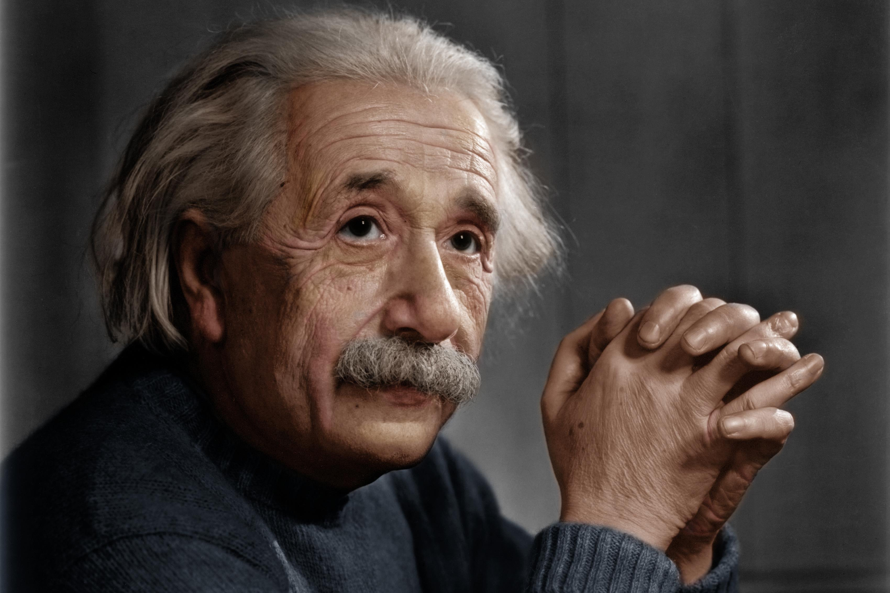

Albert Einstein (Ulm, 1879. március 14. - Princeton, 1955. április 18.) zsidó származású német Nobel-díjas elméleti fizikus; egyes tudományos és laikus körökben a legnagyobb 20. századi tudósnak tartják. Ő dolgozta ki a relativitáselméletet és nagymértékben hozzájárult a kvantummechanika, a statisztikus mechanika és a kozmológia fejlődéséhez. 1921-ben fizikai Nobel-díjjal jutalmazták „az elméleti fizika területén szerzett eredményeiért, különös tekintettel a fényelektromos jelenség törvényszerűségeinek felismeréséért”. Zsenialitására jellemző, hogy előre tudott jelezni olyan dolgokat, amelyeket 100 évvel később a gyakorlatban is bizonyítottak. 2016. február 11-én amerikai kutatók bejelentették, hogy gravitációs hullámokkal kapcsolatos elmélete igazolódott, ezzel a felfedezéssel egy új tudományág született, a gravitációshullám-csillagászat. A hétköznapi emberek bizonyos köreiben ő vált a legmagasabb fokú zsenialitás szinonimájává, arcképe egyike a legismertebbeknek a világon. 1999-ben a Time folyóirat az „évszázad emberévé” választotta.
